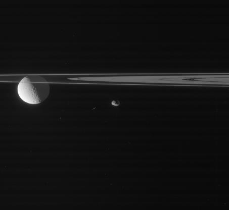
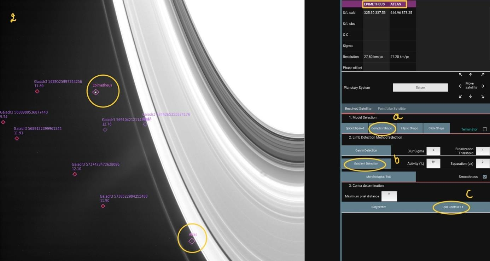
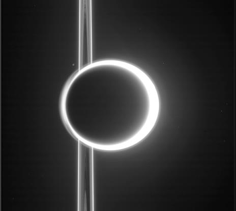
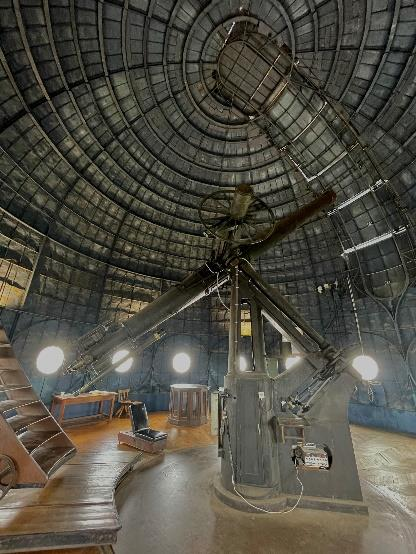
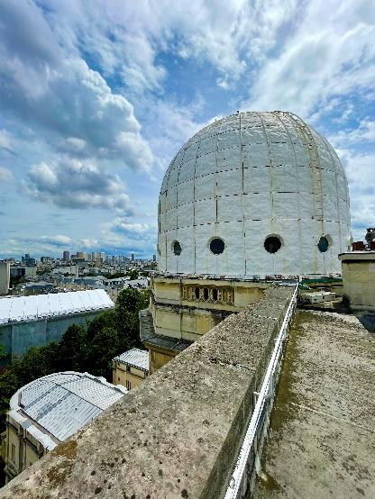
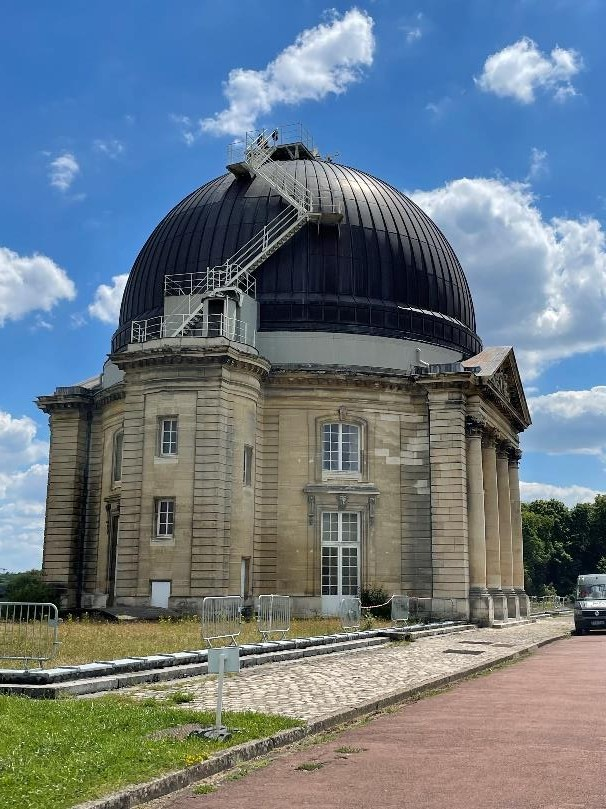
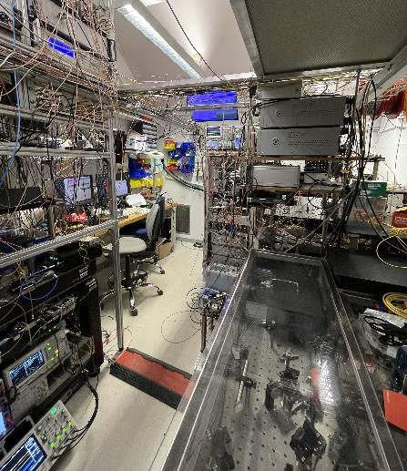

Image processing
Handling raw scientific images: registration, source detection, contour fitting.
SH. 02 · 2ND-YEAR RESEARCH INTERNSHIP · JUNE – JULY 2024
Processing astronomical images from the Cassini spacecraft at the Institute of Celestial Mechanics and Ephemeris Calculation (IMCCE).

01 · THE TOPIC
The Cassini mission photographed Saturn and its satellites for years. These images, available in NASA's archives, are a goldmine for studying the motion of the moons.
My role: analyse a large number of these images with Arago, software developed at the laboratory, to precisely locate several small moons (Prometheus, Pandora, Janus, Epimetheus, Atlas).
This manual work serves as a reference to evaluate an automatic detection algorithm developed as part of a PhD.
02 · THE APPROACH
Detect the stars in the image and match them to the Gaia catalogue, to know the camera's exact orientation.
Choose a shape model for the moon, detect its limb, then fit this contour to determine its centre precisely.
Convert and save each processed image to build a reliable comparison base for automatic detection.
03 · IN PICTURES


04 · THE OBSERVATORY
Visits to the Paris and Meudon domes and the atomic clock laboratories, IMCCE seminars, and discussions with researchers and PhD students about their work and career paths.




Photos: Julie Bodelot
05 · SKILLS GAINED
Handling raw scientific images: registration, source detection, contour fitting.
Using a reference star catalogue and ephemerides to precisely position a celestial object.
Processing a large volume of images without losing precision, since my work serves as a reference for other analyses.
Quickly getting to grips with specialised scientific software, with help from the researchers who developed it.
Discovering celestial mechanics, time metrology and the Observatory's major projects.
Finding this internship myself by contacting an astronomer directly, and fitting into a research team.
06 · TOOLS USED
07 · CONCLUSION
This internship was my first immersion in a research laboratory. Beyond the tool itself, I learned the rigour that scientific data demands and the importance of exchanges within a team.
Meeting researchers and PhD students strengthened my curiosity for space and for research.
This work contributed to the paper "Arago: advanced Python software for space astrometry" (E. Pitavy, V. Lainey et al.), submitted to Astronomy & Astrophysics.